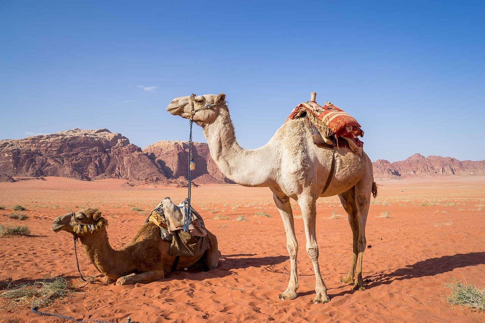

Unta merupakan hewan yang hidup di lingkungan gurun. Seperti diketahui, hanya segelintir tanaman saja yang bisa tumbuh di gurun. Sebagai hewan herbivora, unta makan apa, ya? Gurun identik dengan tanaman berduri. Meskipun hanya tersedia tanaman tersebut, ternyata kuncinya ada pada bibir unta. Bibir mereka sangat keras dan diciptakan untuk memakan tanaman berduri.
Ketiga spesies unta, Camelus dromedarius, Camelus bactrianus, dan Camelus ferus, telah beradaptasi untuk memudahkan mereka hidup di gurun. Dilansir dari laman Live Science, unta memiliki bibir atas yang terbelah, dengan masing-masing setengah bergerak secara terpisah untuk memungkinkan hewan itu merumput di dekat tanah dan makan rumput pendek. Bibir mereka juga kasar dan keras namun masih fleksibel, yang berarti unta dengan mudah mematahkan dan memakan tanaman berduri dan asin. Menurut National History Museum (NHM) London, unta juga memiliki tonjolan berdaging yang disebut papila di mulut mereka. Papila ini melapisi mulut untuk melindunginya dari makanan yang menusuk dan membantu unta menelan makanan itu. Unta dromedarius, yang memiliki satu punuk, memakan tanaman berduri, rumput kering, dan semak asin. Unta jenis ini juga memakan hampir semua tanaman gurun yang tersedia. Secara keseluruhan, unta ini memakan rumput, daun, dan ranting dari tanaman apa pun di gurun, termasuk tunas hijau semak saxaul.
Kemudian, unta baktria (Camelus bactrianus dan Camelus ferus) di Mongolia memakan tanaman semak daun bertangkai dan sejenis tanaman bunga, seperti Caragana, Haloxylon, Reaumuria, dan Salsola yang tumbuh di sana. Lantas, apa yang terjadi setelah para unta menelan makanan tersebut? Unta memiliki tiga sampai empat bagian perut. Dari situ makanan akan dipecah sebagian di dua perut pertama sebelum dimuntahkan sebagai makanan empuk dan diangkat lagi. Setelah ditelan dan masuk ke perut lainnya, olahan makanan akan ditambah dengan mikroba yang membantu pencernaan. Jika tidak tersedia makanan, unta akan memanfaatkan lemak yang ada di punuknya sebagai cadangan makanan. Karena itu, unta dapat bertahan lebih dari seminggu tanpa air dan berbulan-bulan tanpa makanan.